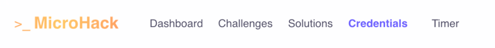
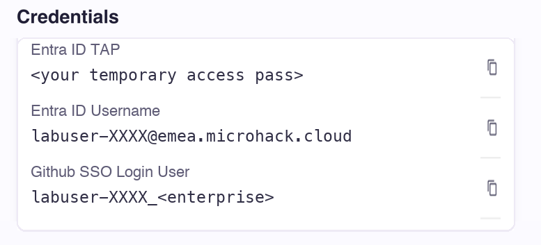

GitHub → Entra SSO
At github.com, enter Github SSO Login User.
On the Microsoft sign-in page, use Entra ID Username and Entra ID TAP from the same tab.
First open the lab portal. Then use the account details inside it to sign in to GitHub and Azure.

A separate browser profile or private window helps avoid selecting your personal account.

At github.com, enter Github SSO Login User.
On the Microsoft sign-in page, use Entra ID Username and Entra ID TAP from the same tab.
At portal.azure.com, use your lab Entra ID Username and TAP.
Select the lab subscription. Its ID and resource group are in the Credentials tab too.
Use the lab GitHub account in VS Code and Copilot. A browser session may not authenticate every client.
gh auth login
gh auth statusChoose GitHub.com and browser login. Then launch modernize and confirm the account.
copilotUse /login inside Copilot and check the displayed account.
az login
az account showUse the lab Entra identity in the Microsoft browser sign-in flow.
If needed, select the subscription using the ID from the Credentials tab:
az account set --subscription <LAB-SUBSCRIPTION-ID>If your workflow uses azd, also run azd auth login with the lab Entra identity. A client already showing the right account does not need another sign-in.
The TAP is a Temporary Access Pass for Entra sign-in. Ask a facilitator if it expires. Keep passwords and TAPs out of agent prompts.